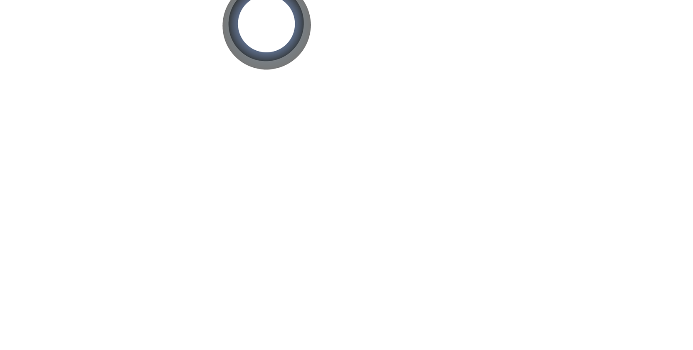
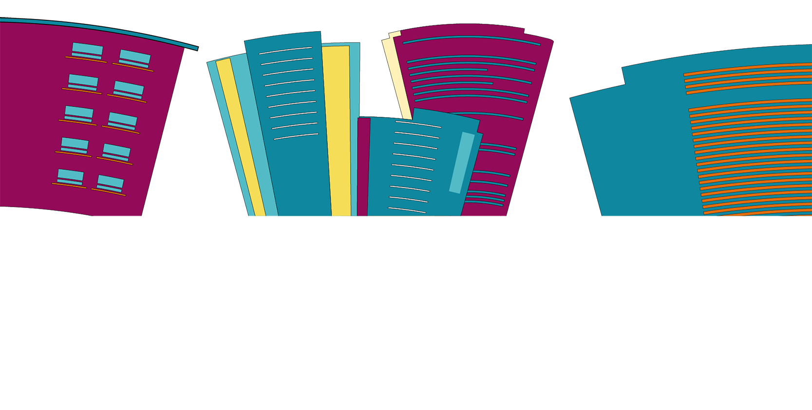
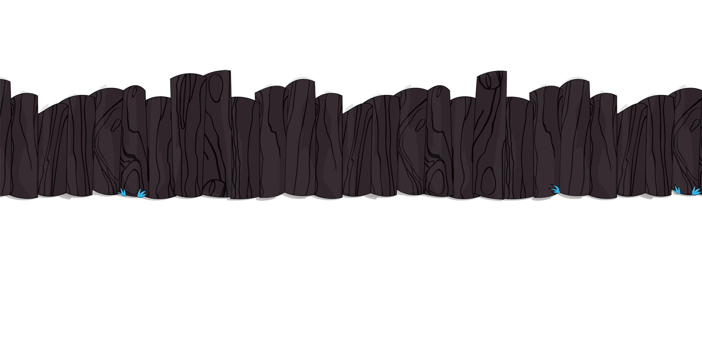
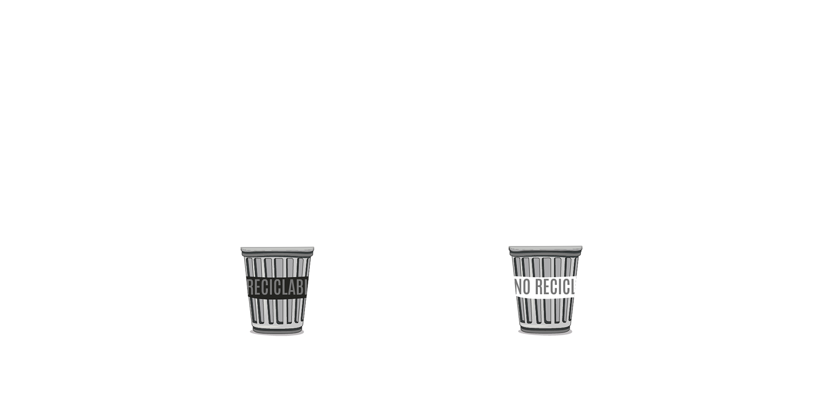
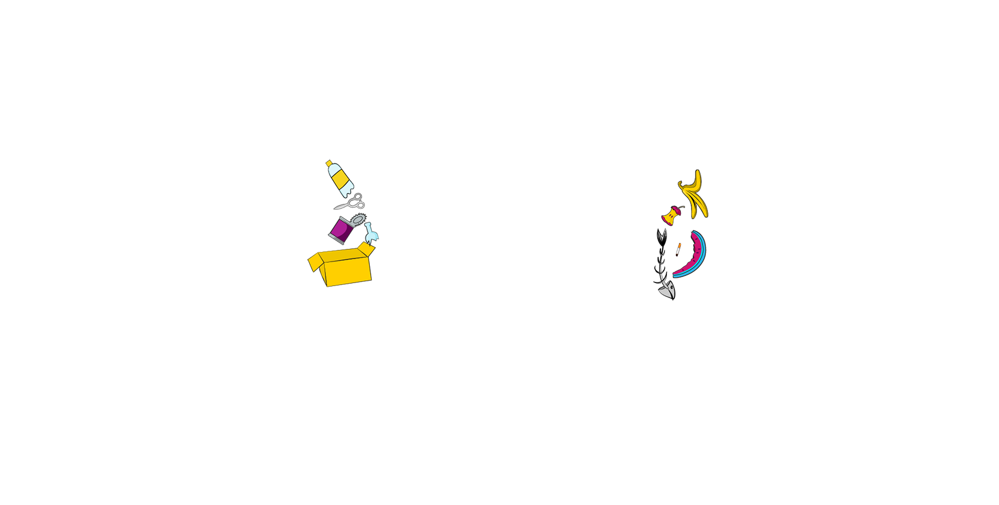

La alcaldía de Bogotá y la UAESP ponen en marcha una campaña transmitida por medios digitales, recordando el mal manejo que se da a los residuos que son arrojados en el espacio público.
Illustrator
After Effects
La acumulación de basuras en las calles afecta la calidad de vida de los bogotanos. La Administración desarrolla planes de mitigación de dichos impactos, no obstante la cultura ciudadana juega un papel importante en la gestión.
El personaje Xavi recordará el daño que puede causar al medio ambiente los desechos, por qué y en donde es mejor depositar sus residuos para detener el bucle.
© 2022 LM. Todos los derechos reservados. Diseñado por Laura Murillo